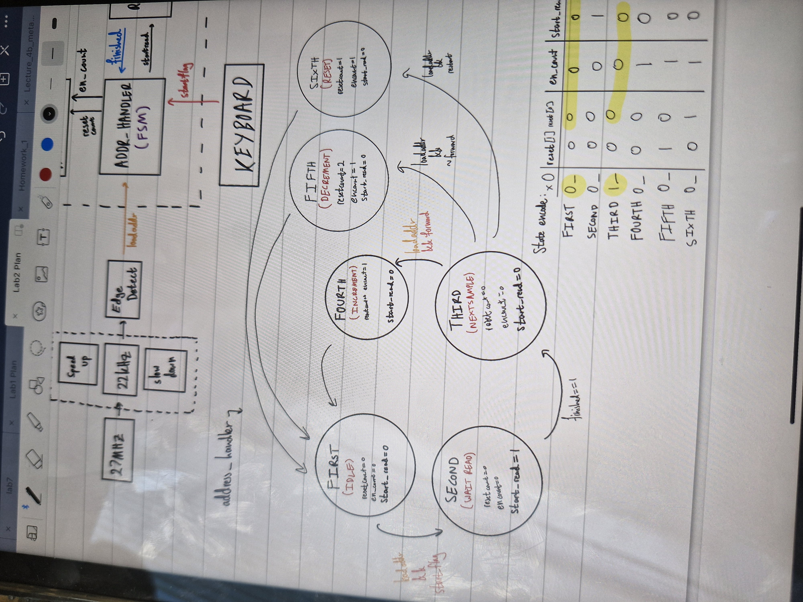

Lab 2-3 is a progressive design project implementing a complete FPGA-based audio player system, advancing from Lab 2's foundation to Lab 3's optimized "pico" implementation. This comprehensive project integrates digital audio processing, user interface controls, and storage management into a functional music player.
Key Accomplishments:
Technical Implementation:
The system combines digital audio processing hardware modules with real-time control firmware. The audio codec interface handles clock domain crossing and signal timing requirements for high-fidelity audio. User controls employ debouncing logic to manage button inputs reliably, while state machines orchestrate track navigation and playback control. The "pico" optimization variant demonstrates resource-conscious design practices while preserving all functional requirements.
This multi-lab progression demonstrates mastery of: hardware-software integration, real-time embedded systems, digital signal processing fundamentals, user interface design, and FPGA resource optimization. The evolution from Lab 2 to Lab 3 showcases practical design iteration and optimization methodologies essential for engineering professional-grade embedded systems.